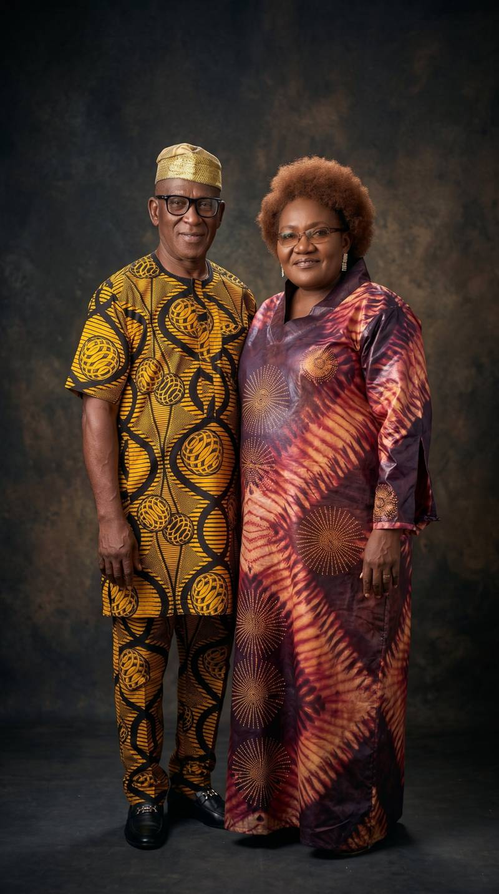
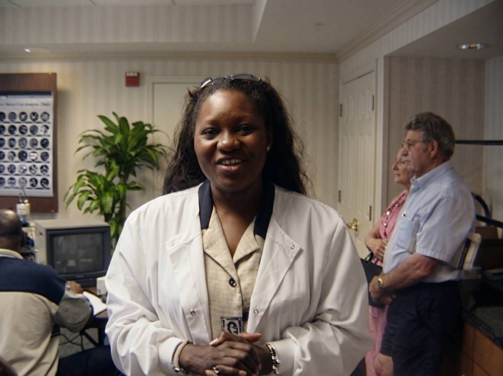
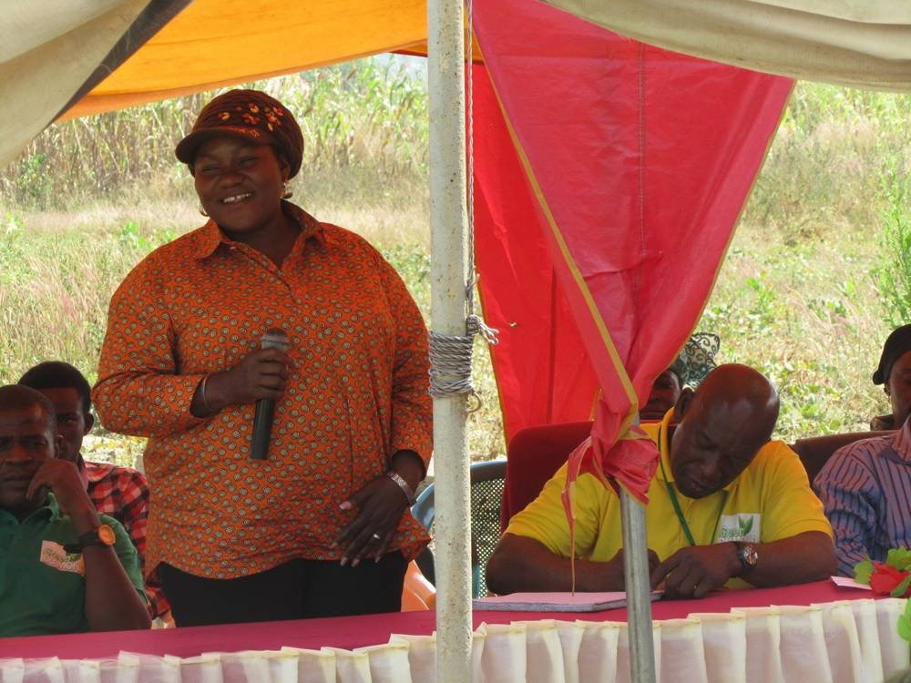
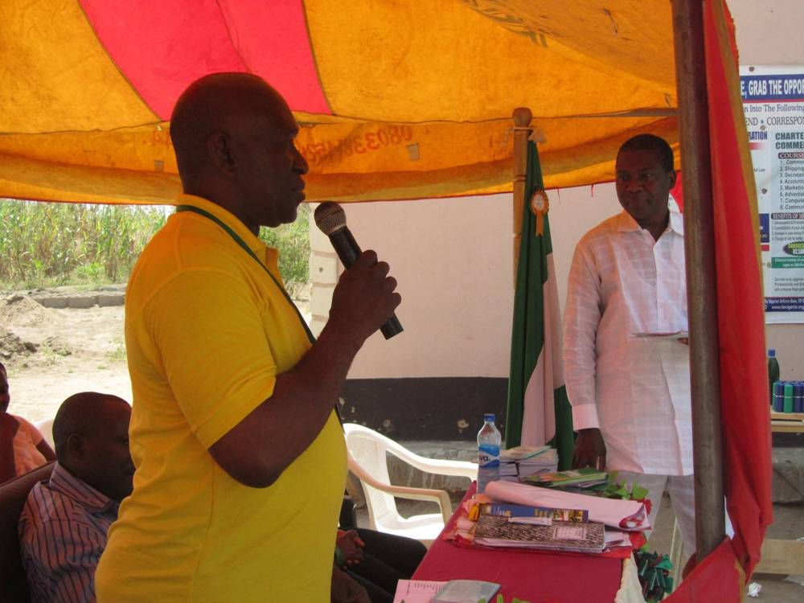
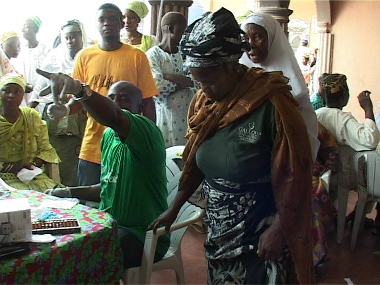
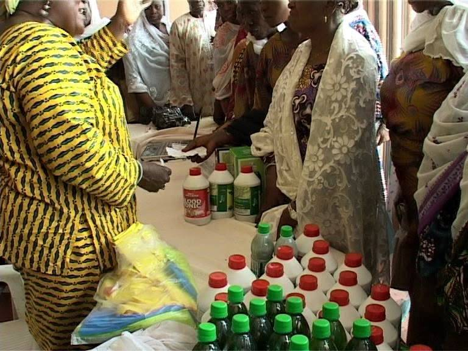
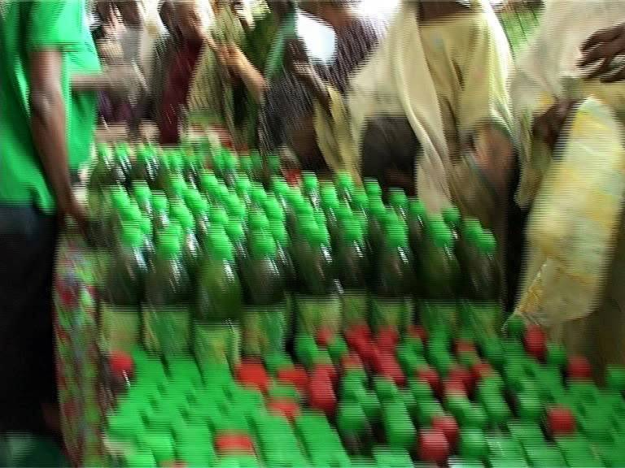

We are dedicated to discovering, developing, and promoting natural healthcare solutions inspired by Africa’s rich medicinal heritage. Through research, innovation, and education, we strive to improve lives and build healthier communities.
Explore Our Research Discover Our Products
Drag to turn the Green Diamond range. Tap any product to look closer.
M&G NatureWorks International Research Institute is committed to exploring the potential of Africa’s natural resources through research, product development and health education. Our work brings together traditional botanical knowledge, innovation and a commitment to improving wellness.
Discover Our StorySeven products, front and back. Move your cursor to tilt the card.
To make African tropical medicine a trusted global standard for natural healing and disease prevention.
To save lives and improve health through the discovery, research, and mass production of high-quality natural medicines and health products.
Our research interests focus on natural healthcare innovation, African medicinal resources and the development of botanical products.
Publications, laboratory imagery and project updates will be added as they are verified by the institute. No clinical results are claimed on this site.
Discover products developed around the institute’s interest in African botanical resources and natural wellness.
Packaging shown as supplied. Product information and any health claims require approval before publication.
Medical disclaimer: Products and wellness information presented on this website are not a substitute for professional medical advice, diagnosis or treatment. Consult a qualified healthcare professional before using any health product. Do not stop prescribed medication without professional medical guidance.

Researcher, health advocate and co-founder dedicated to tropical medicine research and healthcare innovation.
Researcher and co-founder focused on natural medicine development and public health advocacy.
Full biographies and qualifications will be added once supplied and verified by the institute.

Research activities reportedly began through a team of researchers focused on tropical medicine.
Company incorporation in Nigeria, dated 17 May 2010, according to the supplied company-history information.
Continued focus on tropical medicine research, natural healthcare products and public health education.
Historical details to be verified by the institute before being treated as definitive records.
Every meaningful research journey is connected to people, communities and shared aspirations for better health.
Educational content is not medical advice and will be reviewed by qualified professionals before publication.
Community health awareness, wellness education, workshops, public health advocacy and research outreach, shown through images supplied by the institute.





M&G NatureWorks International Research Institute
Block E, Bullet Building, Near Foreign Affairs, Federal Secretariat, FCT Abuja, Nigeria.
Rooted in African botanical research, M&G NatureWorks develops natural wellness products and shares health education. Based in Abuja, Nigeria.